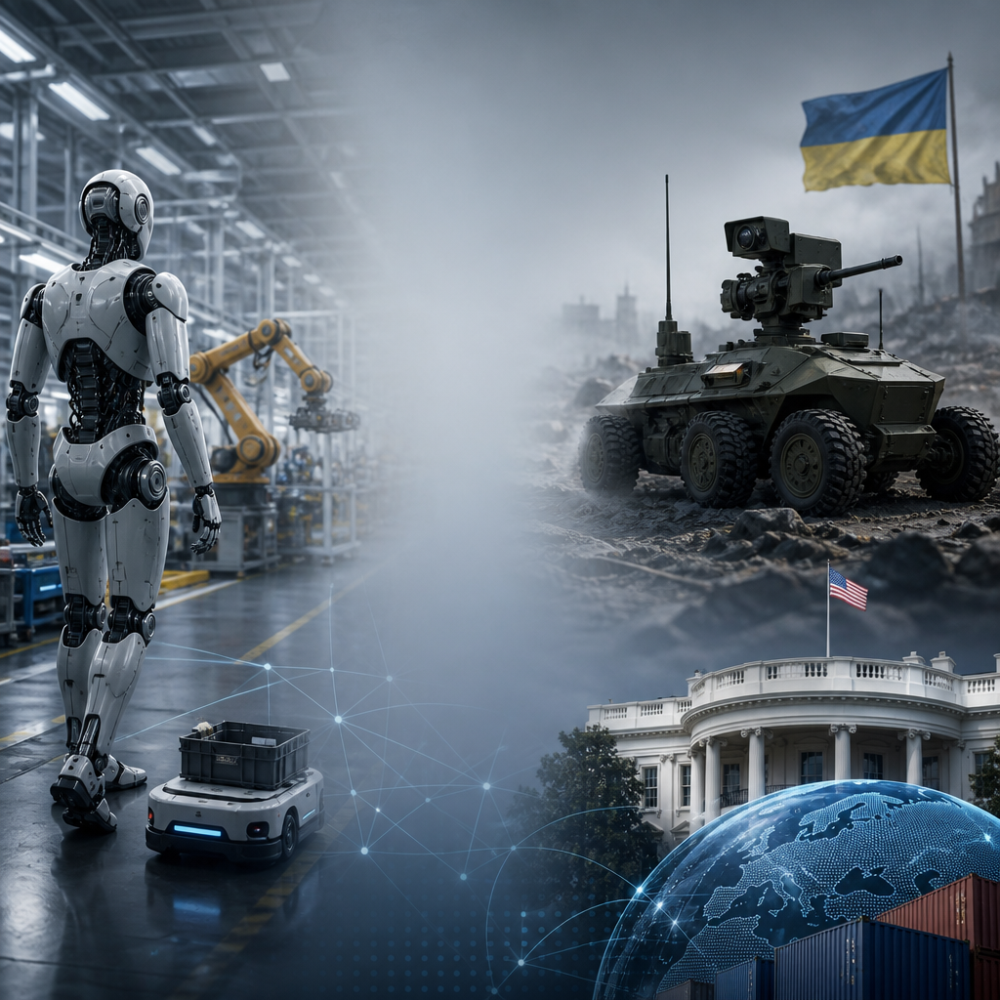

AI, Cybersecurity, and Robotics Strategy
Top Stories
Wall Street rebrands AI as superintelligence
Investors are hearing a new pitch: superintelligence, not just AI. Several tech companies and market voices are using the term to signal bigger ambitions and, perhaps, bigger valuations. At the same time, the label raises expectations around capability, risk, and regulation. For executives, the language matters because strategy now has to link AI claims, governance, and operating model readiness across the business.
AI-Powered Attacks Push Security Teams to Adapt
Security leaders are bracing for a new wave of AI-assisted attacks. Generative tools are making phishing, malware, and social engineering faster and more convincing. That raises the pressure on identity controls, detection, and staff training. Experts say defenses must now cover people, processes, and technology together, not just firewalls and software. Stronger enterprise-wide architecture is becoming essential as threats spread across every part of the business.
Robotics pushes deeper into factories and front lines
Robotics is moving from pilot projects to practical deployment. Meta has reportedly built a humanoid prototype as startups race ahead in automation. In Europe, Germany and Ukraine are testing an armed ground robot for frontline use. Policy is also shifting, as the White House weighs tariffs on foreign-made robots. These moves show edge systems are becoming more capable, more connected, and more strategic for organizations.
Pillar Briefs
Artificial Intelligence
Wall Street rebrands AI as superintelligence
Investors are hearing a new pitch: superintelligence, not just AI. Several tech companies and market voices are using the term to signal bigger ambitions and, perhaps, bigger valuations. At the same time, the label raises expectations around capability, risk, and regulation. For executives, the language matters because strategy now has to link AI claims, governance, and operating model readiness across the business.
Sources:
OpenAI chief questions local AI models
The debate over where AI should run is intensifying. Some leaders are arguing that local models on personal computers are not the best path for the future, even as demand grows for faster, more controlled deployment. The issue goes beyond hardware. It touches privacy, cost, and enterprise architecture choices. That matters because AI adoption will depend on how well organizations connect tools, people, and infrastructure.
Sources:
Regulators and educators tighten focus on AI
AI is moving deeper into oversight and training. The SEC’s top enforcement official is warning companies that AI claims may draw scrutiny, while medical educators are rethinking how students learn alongside AI tools. These are two sides of the same shift. Businesses and institutions need clearer standards, stronger governance, and practical skills development. That matters because trust will shape how AI scales across the economy and society.
Sources:
- https://finance.yahoo.com/technology/ai/articles/us-secs-top-cop-says-175527885.html
- https://healthjournalism.org/blog/2026/10/schooled-by-ai-the-evolving-role-of-artificial-intelligence-in-medical-education/
Cybersecurity
AI-Powered Attacks Push Security Teams to Adapt
Security leaders are bracing for a new wave of AI-assisted attacks. Generative tools are making phishing, malware, and social engineering faster and more convincing. That raises the pressure on identity controls, detection, and staff training. Experts say defenses must now cover people, processes, and technology together, not just firewalls and software. Stronger enterprise-wide architecture is becoming essential as threats spread across every part of the business.
Sources:
- https://abcnews.com/amp/Technology/code-red-cybersecurity-prepare-wave-ai-hacking/story?id=137518198
Healthcare Cyber Incident Disrupts Patient Services
A cybersecurity incident at University Hospitals has affected internal systems tied to MyChart, electronic prescribing, and appointments. The event highlights how quickly operational disruption can spread when digital platforms support core care delivery. Health systems must balance service continuity, data protection, and rapid response. For enterprises, it is another reminder that resilient architecture matters because cyber risk now touches both business operations and customer experience.
Sources:
Data Exposure Risks Keep Testing Enterprise Trust
Cybersecurity awareness campaigns are ending with fresh concern over the scale of financial losses and data exposure. Separate reporting points to a major incident involving customer names and emails, underscoring how basic information can still be valuable to attackers. Businesses need stronger governance, faster detection, and broader resilience across their digital ecosystem. In a connected economy, trust depends on security that reaches the whole organization.
Sources:
- https://www.forbes.com/sites/emilsayegh/2026/10/31/cybersecurity-awareness-month-ends-with-a-63-billion-halloween-scare/
- https://bitcoinfoundation.org/news/companies/chainalysis-exposes-customer-names-and-emails-in-cybersecurity-incident/
Edge Computing
Robotics pushes deeper into factories and front lines
Robotics is moving from pilot projects to practical deployment. Meta has reportedly built a humanoid prototype as startups race ahead in automation. In Europe, Germany and Ukraine are testing an armed ground robot for frontline use. Policy is also shifting, as the White House weighs tariffs on foreign-made robots. These moves show edge systems are becoming more capable, more connected, and more strategic for organizations.

Sources:
- https://www.theinformation.com/articles/meta-built-humanoid-prototype-chinese-startup-ramp-robotics-push
- https://www.euronews.com/2026/10/29/germany-and-ukraine-test-armed-ground-robot-for-frontline-deployment
- https://www.therobotreport.com/white-house-makes-section-232-determination-regarding-foreign-made-robots/
Rare earth supply chains shape the robotics boom
The next wave of robotics depends on materials as much as software. Rare earth elements remain essential for motors, sensors, and other high-performance components. As demand rises, companies are watching supply risk, cost pressure, and sourcing strategy more closely. That matters because edge computing and robotics rely on resilient hardware supply chains to scale reliably across manufacturing, logistics, defense, and other critical operations.
Sources:
AI and robotics planning now shape business strategy
AI is increasingly tied to robotics strategy, not just software experiments. One debate is how automation could alter jobs, income, and economic policy at scale. That conversation is pushing executives to think beyond individual machines and toward enterprise-wide design. It aligns with a broader shift in digital transformation, where strategy, people, processes, and physical operations all need to work together.
Sources:
Embracing Digital Transformation
Enterprise architecture broadens as O-DXA advances toward ratification
The latest Embracing Digital Transformation episodes point to a common theme: digital change is becoming an enterprise-wide discipline rather than a narrow technology project. One episode argued that AI is lowering the barrier to creating video and other visual content, while also shifting the competitive advantage toward those who can direct tools effectively. Another warned that AI can make team conflict harder to surface, reinforcing the need for self-awareness, structured disagreement, and stronger organizational habits.
That broader view echoed at The Open Group Summit 2026, where the focus was on enterprise architecture spanning strategy, people, processes, digital capabilities, and physical operations. The Open Digital Transformation Architecture standard is moving through snapshot and review stages on the path to ratification in the coming months, underscoring the push to formalize how organizations connect technology choices with operating models and execution.
Taken together, the episodes and the summit suggest that successful transformation is increasingly measured less by the tools adopted than by how well organizations align them across the whole business.
Sources: